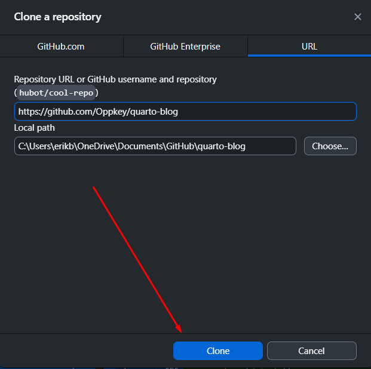
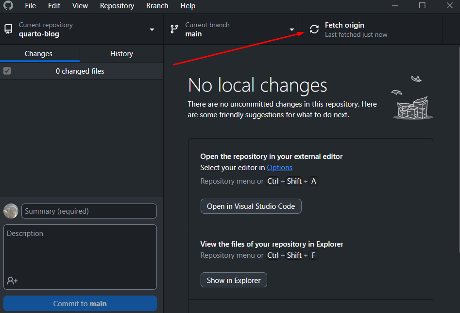
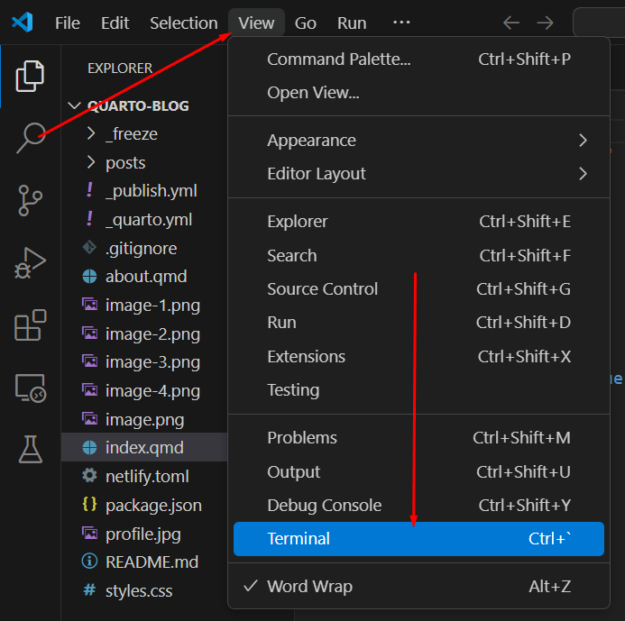
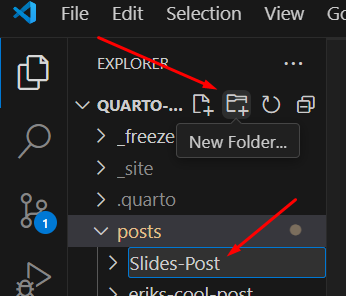
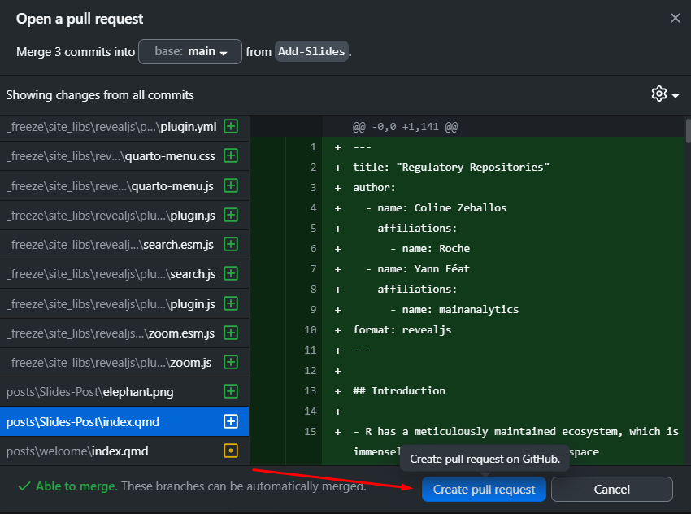

R Consortium Blog
How to upload your blog post to a quarto-based website
Cloning the repo
On our GitHub repository, click “Code“ and then “Open with GitHub Desktop”.

In GitHub Desktop click “Clone”

Initial setup
In Github Desktop click on “Fetch origin” to get the most up to date blog on your local computer.

In Github Desktop click on “Open in Visual Studio Code” to start working on your blog

In VSCode click on “View” and then “Terminal”

In the Vscode Terminal make sure you are on a Linux terminal by switching to Ubuntu (WSL)

Install R on Linux
Install R using sudo apt-get install r-base and sudo apt-get install r-base-dev
R Packages Installation Method #1
Install R packages on Linux; type R in terminal and then install.packages(‘rmarkdown’)
GGPLOT2 installation: install.packages(“ggplot2”)
dygraphs installation: install.packages(“dygraphs”)
here installation: install.packages(“here”)
R Packages Installation Method #2
Use RStudio Desktop on Windows then click on “install”

Search for the package you want for example “here” package and click “install”

Install the Vscode extension “Quarto”

Recommended (optional) in the Quarto Extension settings enable the “Render on Save” option

Running the Project in a Live Preview
In VSCode click on “View” and then “Command Palette”

Search for “Quarto: Preview” and click on that command

Adding a Blog post
In Github desktop click “Branch” and then “New branch” make a new branch for example “Adding-new-elephant-post”


In VSCode add a new Folder in the “posts” directory and name it. My new post folder is “Slides-Post”

Add a new index.qmd file (Quarto Markdown File) into the new post folder.

Start editing your new blog post!
Uploading your Post
In Github desktop commit your changes and a short message for your changes, for my example I am committing to the “Add-Slides” branch.

Once committed, push it to the remote Github Repository. On the bottom left is an indication of a successful commit.

Make a pull request in Github desktop and then 1 reviewer should check the post and make sure it is looking good!


Click on “Create pull request” on Github

Approval Process and Timing
- Email info@r-consortium.org